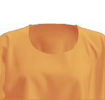
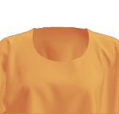
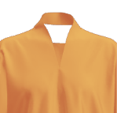
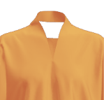
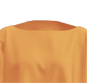
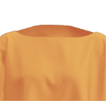

 

 



Click the collar, sleeve and body tiles of the garment to alter fit and style. This will update the fabric size and pattern template downloads you need to make your chosen style.
Fabric needed: 110cm wide x 75cm long
| Measurements for Current Style | |
|---|---|
| Body Length: | 50cm |
| Body Circumference: | 110cm |
| Sleeve Circumference: | 50cm |
| Custom Values: | |
|---|---|
| Body Length: | |
| Body Circumference: | |
| Sleeve Circumference: |
Each Make/Use garment made in this method is unique to both the fabric and the user. The length of a Make/Use cropped Tshirt can be altered to suit an individual's height or taste; a favourite fabric can be used to make the Cropped Tshirt and drastically alter its appearance; new iterations can be created by combining templates in ways dreamt up by the maker/user. The possibilities are literally endless.
Directions:
- Using the Cropped Tshirt Grid file as a guide, mark half way between edges of fabric for Fabric Centre Line and ¼ Fabric Width (A) either side of this.
- Measure on your body the desired depth of sleeve (B) from your own shoulder down - this begins to determine how wide your sleeve is on your garment.
- Measure on your fabric 1 x B to Shoulder Line, and 1 x B from Shoulder Line to Sleeve Depth.
- Finally measure from shoulder to finished desired length and then minus B, for C.
- Mark horizontal and vertical lines with tailors chalk.
- The intersections of Fabric Centre Line and Shoulder Line, as well as ¼ fabric width and Sleeve Depth are key anchors for placing the templates.
- Print: Print out using a standard printer the files only A4 and/or A3 paper or card and cut out the dotted fill. Follow the instructions on the pages
- Lasercut: Download files and have laser cut on 2mm card according to lasercutter specifications.
- Line up desired templates with grid and follow instructions printed on them.